Metric na macOS
Zestaw narzędzi do tempa i częstotliwości na macOS z wbudowanym metronomem. Ustawia czasy opóźnień na podstawie tempa, liczy stosunki i pasma boczne FM, synchronizuje LFO z tempem i transponuje próbkę, w skalowalnym oknie, które można trzymać otwarte obok DAW. Obsługuje Siri, Shortcuts i widżet w Notification Center.
- Metronom z tap tempo i wizualnymi uderzeniami
- Konwerter BPM → ms / Hz (zwykłe, z kropką, triolowe)
- Tabela nuta ↔ częstotliwość (108 nut, A4 = 440 Hz)
- Transpozycja i prędkość, kalkulator FM, częstotliwości LFO, 32 harmoniczne
- Tap tempo na pasku menu, czasy opóźnień w ms lub Hz, a do tego metronom i dźwięki
- Siri, Shortcuts i widżet BPM w Notification Center
Zrzuty ekranu
Zrzuty ekranu w trybie jasnym i ciemnym, dopasowane do motywu strony.

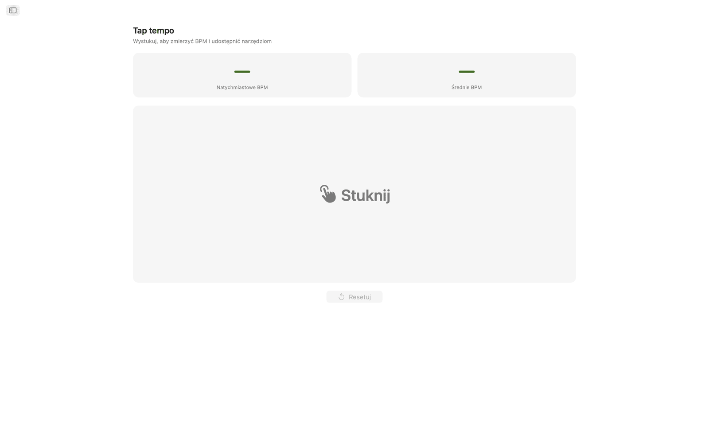
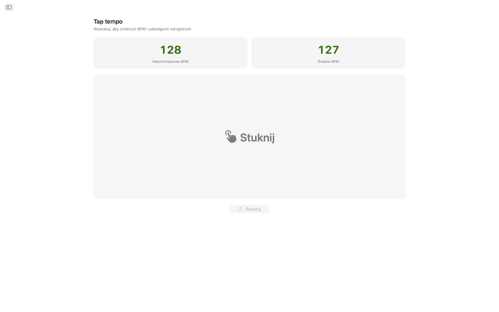
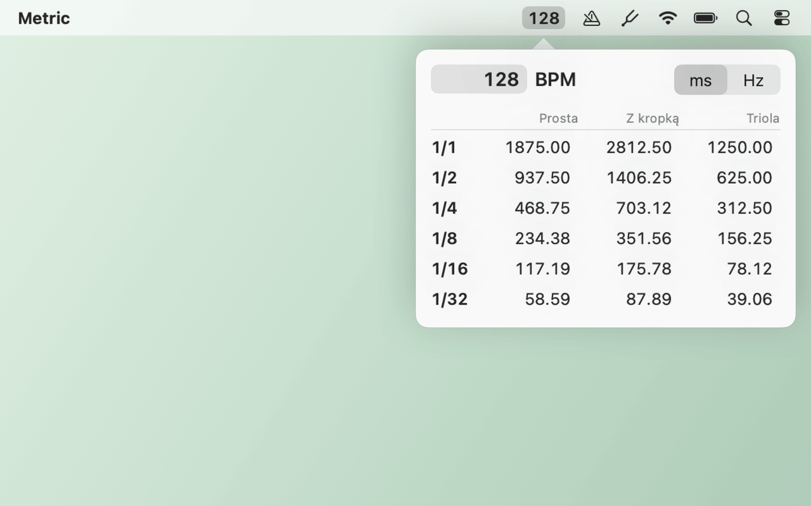
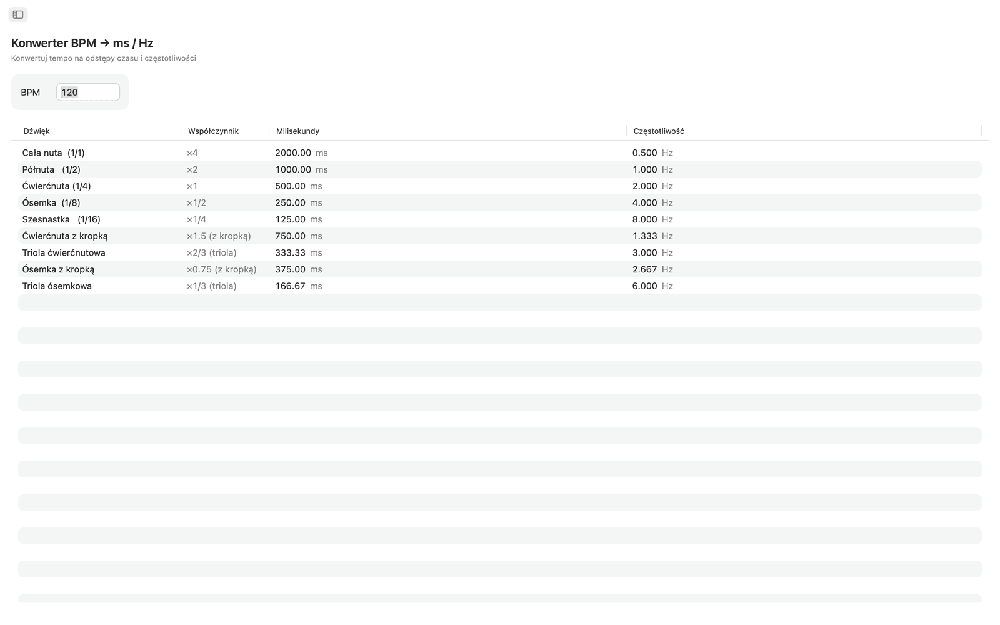
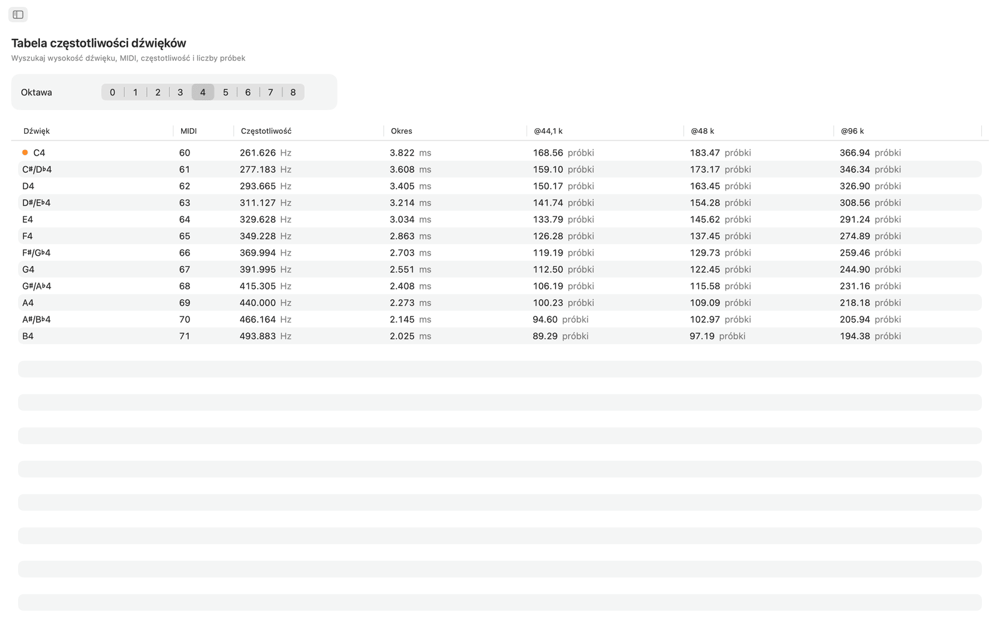
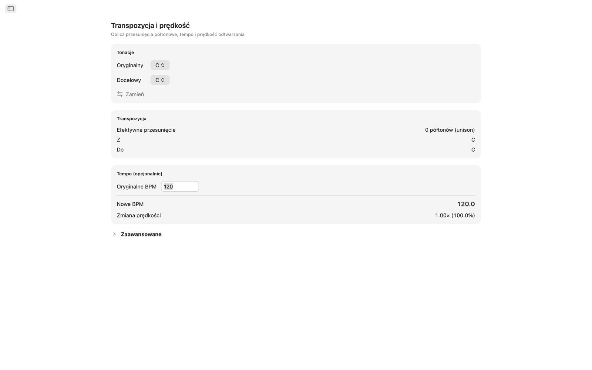
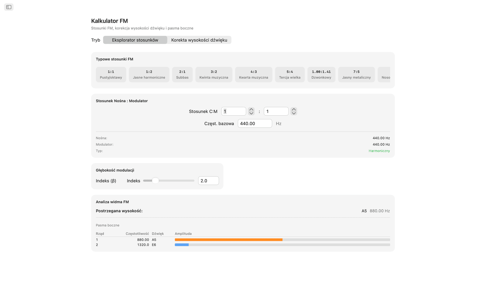
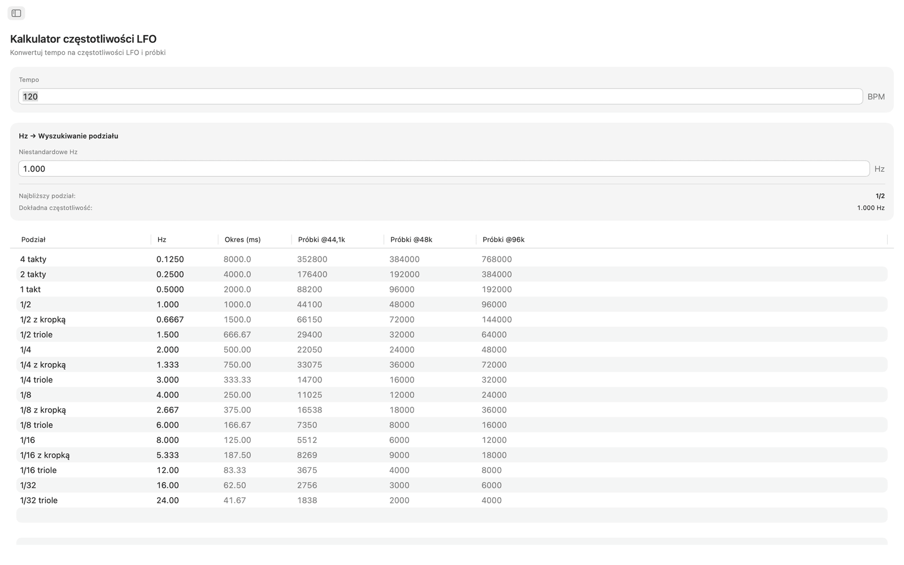
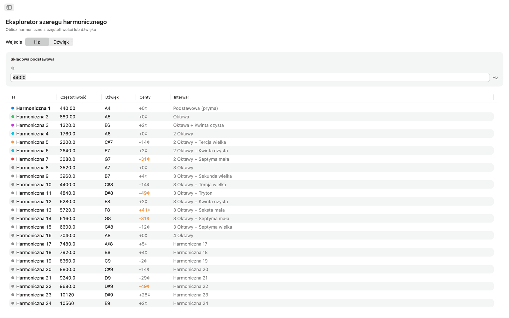
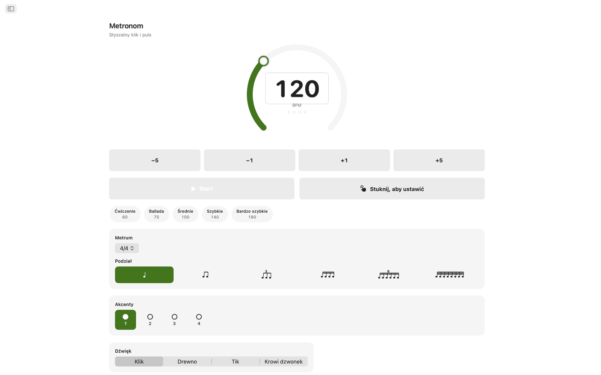

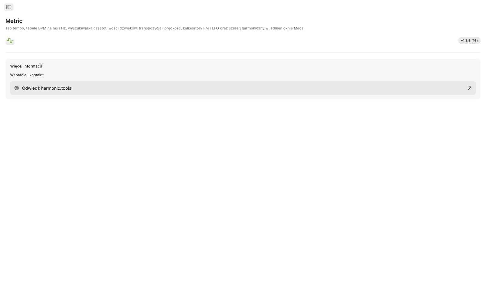
Funkcje
- Metronom ma pokrętło tempa, ustawianie tempa kliknięciem, metrum, podziały i wizualny wskaźnik uderzeń.
- Kliknij dużą powierzchnię, aby zmierzyć tempo. Metric pokazuje BPM z ostatniego kliknięcia i średnią kroczącą z maksymalnie ośmiu kliknięć, a każdy z odczytów można jednym kliknięciem przesłać do konwertera BPM, transpozycji lub kalkulatora częstotliwości LFO.
- Konwerter BPM → ms / Hz przyjmuje tempo i podaje wartości zwykłe, z kropką i triolowe dla nut całych, półnut, ćwierćnut, ósemek i szesnastek. Każdy wiersz pokazuje milisekundy i częstotliwość w Hz, więc delay, pre-delay reverbu czy timing sidechain ustawisz bez kalkulatora.
- Tabela częstotliwości nut obejmuje wszystkie 108 chromatycznych nut od C0 do B8. Każda nuta ma numer MIDI, częstotliwość w Hz, okres w milisekundach i liczbę próbek przy 44,1 kHz, 48 kHz i 96 kHz. Środkowe C jest oznaczone. Wartości przy A4 = 440 Hz.
- Przy transpozycji wybierasz oryginalną i docelową tonację, a Metric pokazuje przesunięcie w półtonach, nazwę interwału i dokładną wartość transpozycji DAW. Po dodaniu oryginalnego BPM oblicza nowe tempo i współczynnik prędkości odtwarzania. Do dokładnej regulacji służą suwak centów (±100) i suwak prędkości obejmujący dwie oktawy (±24 półtony).
- Kalkulator FM ma dwa tryby. Eksplorator stosunków ustawia stosunki nośnej i modulatora na podstawie częstotliwości bazowej i oferuje dziesięć presetów FM, od pustych oktaw (1:1) po nieharmoniczne dzwony (1:π). Tryb korekty wysokości dźwięku działa odwrotnie: wybierasz docelową nutę i dostajesz dokładne częstotliwości nośnej i modulatora. Oba tryby pokazują tabelę pasm bocznych z maksymalnie dziesięcioma składowymi, ich częstotliwościami, najbliższymi nutami i amplitudami oznaczonymi kolorami, sterowanymi suwakiem indeksu modulacji.
- Kalkulator częstotliwości LFO przelicza dowolne BPM na częstotliwości LFO w 17 podziałach muzycznych, od czterech taktów do triol 1/32. Każdy wiersz pokazuje Hz, okres w milisekundach i próbki na cykl przy 44,1 kHz, 48 kHz i 96 kHz. Odwrotne wyszukiwanie przyjmuje dowolną wartość Hz i znajduje najbliższy podział muzyczny, pokazując błąd.
- Eksplorator serii harmonicznych zaczyna od częstotliwości lub dowolnej nuty i wypisuje pierwsze 32 harmoniczne z częstotliwością, najbliższą nutą, odchyleniem w centach i etykietą interwału. Harmoniczne niskiego rzędu są oznaczone kolorami, a odchylenia powyżej 30 centów wyróżnione, dzięki czemu łatwo zauważyć składowe nieharmoniczne.
Wspólne tempo i strojenie
Kliknij tempo raz, a konwerter BPM, transpozycja i częstotliwości LFO użyją tego samego bieżącego BPM. Częstotliwości nut, kalkulator FM i harmoniczne korzystają z A4 = 440 Hz.
Siri, Shortcuts i widżet
Poproś Siri o uruchomienie lub zatrzymanie metronomu, ustawienie BPM, wystukanie tempa, przeliczenie BPM na ms, znalezienie częstotliwości nuty lub transpozycję tempa. Każde narzędzie jest też akcją Shortcuts, a widżet BPM trzyma Twoje tempo w Notification Center.
Narzędzia na pasku menu
Wystukaj tempo z paska menu bez otwierania aplikacji. Prawy przycisk pokazuje czasy opóźnień w ms lub Hz i pozwala wpisać dowolne tempo. Metronom i wysokości dźwięków są opcjonalne, a w ustawieniach jest tryb tylko z paska menu i uruchamianie przy logowaniu.
Na pulpicie
- Działa w pełni offline. Bez konta, reklam i śledzenia
- Natywna aplikacja macOS z nawigacją boczną
- Interfejs uwzględniający tryb ciemny, dopasowany do wyglądu systemu
- Liczba próbek przy 44,1 kHz, 48 kHz i 96 kHz
- Skalowalny rozmiar okna. Trzymaj je obok DAW
Dostępność
Działa z VoiceOver i Sterowaniem głosem oraz daje się obsługiwać z klawiatury, strzałkami i spacją.
Metric jest darmowy przez 7 dni próby. Po jej zakończeniu pełny dostęp to jednorazowy zakup, bez subskrypcji.